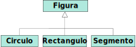
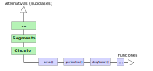

Tipos de datos algebraicos
montenegro@fdi.ucm.es
Máster en Ingeniería Informática
Facultad de Informática
Universidad Complutense de Madrid
Tipos de datos algebraicos (TDA)
El concepto de tipo de datos algebraico (TDA) es fundamental en programación funcional.
Un TDA es un tipo de datos formado mediante la combinación de otros tipos de datos, bien sean simples, o bien otros TDA.
Hay dos clases fundamentales de TDA:
- Tipos producto
- Tipos unión disjunta
- Tipos producto
- Tipos unión disjunta
- Extensibilidad horizontal y vertical
Tipos producto
Tipos producto
Tipos producto
Casi todos los lenguajes de programación disponen de tipos producto:
- C: registros (
struct) - Java: clases (
class) o registros (record) - C++: registros (
struct) o clases (class) - Javascript: objetos (
{...})
- C: registros (
¿Y en Elixir?
Podemos representar los tipos producto de varias formas. Entre ellas:
Tuplas
Diccionarios
Structs
Tipos producto mediante tuplas
Las tuplas permiten agrupar distintos elementos, al igual que los tipos producto.
Por ejemplo, dado un tipo producto con tres atributos,
(dia, mes, año)
sus instancias pueden representarse mediante tuplas de tres elementos:
Ejemplos
Inconvenientes de las tuplas
- Requiere recordar la posición de cada componente dentro de las tuplas.
- Si se añade un nuevo atributo al tipo producto, hay que reescribir las funciones existentes.
Tipos producto mediante diccionarios
Los diccionarios pueden agrupar varios atributos de igual o distinto tipo. Además, las claves nos permiten identificar los nombres de los atributos.
Por ejemplo, dado un tipo producto con tres atributos,
(dia, mes, año)
sus instancias pueden representarse mediante tuplas de tres elementos:
Ejemplos
Utilizando ajuste de patrones:
Ejemplos
Sin ajuste de patrones:
Cuando las claves de un diccionario son átomos, es posible utilizar la notación
dicc.clavepara acceder a los elementos.Por ejemplo,
fecha.diaequivale aMap.fetch!(fecha, :dia).- Si la clave no se encuentra en el diccionario, se produce una excepción.
Ventajas e inconvenientes
- Podemos acceder a los atributos a partir del nombre, y no de la posición.
- Si se añade un nuevo atributo al tipo producto, no hay que reescribir las funciones existentes.
- El compilador no comprueba que los atributos sean correctos.
def siguiente_año(%{dia: 29, mes: 2} = fecha) do
%{dia: 1, mes: 3, año: fecha.añño + 1} Errata
end
def siguiente_año(fecha) do
%{ fecha | año: fecha.año + 1 }
end > siguiente_año(%{dia: 29, mes: 2, año: 2322})
** (KeyError) key :añño not found in: %{dia: 29, mes: 2, año: 2322}.
Did you mean: añoStructs
Un struct es como un diccionario en Elixir, pero sirve para definir un conjunto de datos con una estructura fija, definida de antemano.
Se definen usando
defstruct, seguido de los nombres de los atributos.El nombre del struct es el nombre del módulo en el que se define.
Creación de instancias de structs
Se utiliza una sintaxis similar a los diccionarios, pero con el nombre del struct después del símbolo
%> f = %Fecha{dia: 23, mes: 2, año: 23} > f.dia 23En esta ocasión, si introducimos un atributo que no existe, el compilador nos avisa:
> f = %Fecha{dia: 23, mes: 2, añño: 23} Errata ** (KeyError) key :añño not found
Valores por defecto
Ejemplos
¡Los structs son diccionarios!
En realidad, un struct se implementa mediante un diccionario que tiene una clave especial, llamada
__struct__.El valor de esta clave es el tipo de struct.
El siguiente diccionario:
es equivalente a:
Consecuencias
Podemos pasar un
structa cualquier función que admita diccionarios.> f = %Fecha{dia: 1, mes: 1, año: 2022} > Map.update!(f, :año, &(&1 + 1)) %Fecha{dia: 1, mes: 1, año: 2023}Sin embargo, los
structno son enumerables, aunque pueden convertirse en listas medianteMap.to_list/1:> %Fecha{dia: 1, mes: 1, año: 2022} |> Map.to_list() [__struct__: Fecha, dia: 1, mes: 1, año: 2022]
Tipos unión
Tipos unión
Un tipo unión puede tomar valores de uno de entre varios tipos prefijados T1, T2, …, Tn, denominados alternativas.
Dado un valor de un tipo unión, siempre es posible determinar a qué alternativa Ti corresponde.
También llamados: sum types, variants, discriminated unions, disjoint unions, coproducts.
En lenguajes funcionales
Suma de productos
Cada una de las alternativas de un tipo suma puede ser, a su vez, un tipo producto.
Por ejemplo, en OCaml:
En Haskell:
¿Y en Elixir?
Hay dos alternativas:
Tuplas con etiqueta
Structs
Tuplas con etiqueta (tag)
Etiqueta Pos. Alto Ancho
{:rectangulo, {1, 3.5}, 10.3, 20.3}
Etiqueta Pos.Radio
{:circulo, {2.5, 2}, 20.2}
Etiqueta Ini. Fin
{:segmento, {1, 1}, {3, 1}}- La primera componente es un átomo que indica la alternativa del tipo unión.
- El resto de componentes contienen la información del tipo producto.
- Si una alternativa no tiene información asociada, con un átomo es suficiente.
Definición de funciones
- Para distinguir entre una alternativa u otra, se utiliza ajuste de patrones:
def area({:rectangulo, _, alto, ancho}), do: alto * ancho
def area({:circulo, _, radio}), do: :math.pi() * radio * radio
def area({:segmento, _, _}), do: 0> area({:rectangulo, {1, 2}, 2.0, 3})
6.0
> area({:circulo, {0, 0}, 2.0})
12.566370614359172Tipos unión mediante structs
defmodule Figuras do
defmodule Rectangulo do
defstruct [:centro, :alto, :ancho]
end
defmodule Circulo do
defstruct [:centro, :radio]
end
defmodule Segmento do
defstruct [:desde, :hasta]
end
end- Definimos un
structpara cada alternativa.
Ejemplos de instancias de figuras:
En este caso no necesitamos etiquetas, porque el tipo de struct permite distinguir entre una alternativa u otra.
- Este tipo está reflejado en la clave oculta
__struct__de los diccionarios.
- Este tipo está reflejado en la clave oculta
Ejemplo
def area(%Rectangulo{} = r), do: r.alto * r.ancho
def area(%Circulo{} = c), do: :math.pi() * c.radio * c.radio
def area(%Segmento{}), do: 0> area(%Figuras.Rectangulo{centro: {1, 3.5}, alto: 2, ancho: 3})
6.0- Desde la shell (iex) hemos de utilizar el nombre del módulo
completo (
Figuras.Rectangulo) - Si no queremos introducir todo el nombre, podemos utilizar
alias:
> alias Figuras.Circulo
> area({%Circulo{centro: {1, 3.5}, radio: 3})
28.274333882308138Extensibilidad horizontal y vertical
Enfoque orientado a objetos
- En POO, podemos modelizar tipos unión mediante
herencia.
- Una interfaz abstracta con el tipo unión.
- Clases concretas para cada alternativa.

Ejemplo: figuras en Java
Implementación de operaciones
- Si queremos implementar una operación que dependa de la subclase utilizada, la manera clásica en POO es definirla mediante un método abstracto que se sobreescriba en cada alternativa.

Comparativa
Tenemos dos enfoques:
Distinción de casos explícita mediante ajuste de patrones (Lenguajes funcionales)
Distinción de casos implícita, distribuida en las distintas subclases (Lenguajes orientados a objetos)
¿Cuál es mejor?
¿En cuál de los dos enfoques es más fácil añadir
una nueva función sobre el tipo de datos
Figura?
Por ejemplo, una función perimetro()
Ajuste de patrones
- Se define la nueva función. No afecta a código existente.
Herencia
- Hay que modificar la clase
Figurapara añadir el nuevo método. También hay que modificar cada subclase para implementar el método abstracto. Afecta a código existente.
- Hay que modificar la clase
¿En cuál de los dos enfoques es más fácil añadir
una nueva alternativa al tipo de datos
Figura?
Por ejemplo, una nueva alternativa Triangulo
Ajuste de patrones
- Hay que modificar todas las funciones existentes
que actúen sobre
Figurapara incorporar el nuevo caso. Afecta a código existente.
- Hay que modificar todas las funciones existentes
que actúen sobre
Herencia
- Se define la nueva clase, junto con los casos
correspondientes para cada una de las funciones definidas sobre
Figura. No afecta a código existente.
- Se define la nueva clase, junto con los casos
correspondientes para cada una de las funciones definidas sobre
Extensión horizontal vs vertical

- Extensión horizontal: Añadir nuevas operaciones.
- Extensión vertical: Añadir nuevas alternativas al tipo.
Extensibilidad en Elixir
El modelo de datos de lenguajes funcionales (basado en tipos algebraicos y ajuste de patrones) es más adecuado para la extensibilidad horizontal.
No obstante, algunos lenguajes (como Elixir y Haskell) proporcionan mecanismos que facilitan la extensión vertical en aquellos casos en los que sea necesario.
En Elixir: protocolos